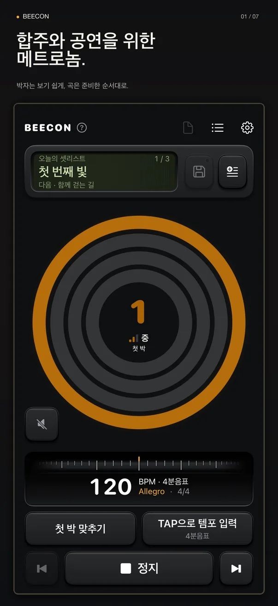
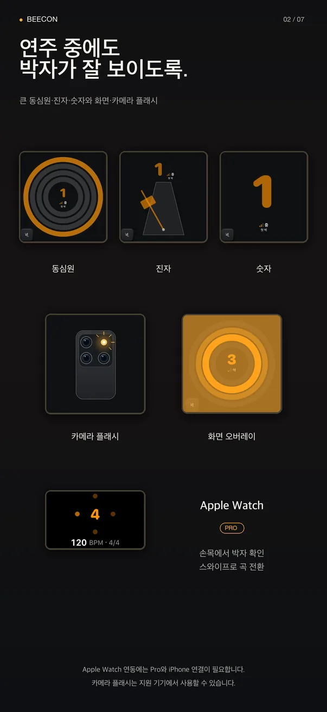
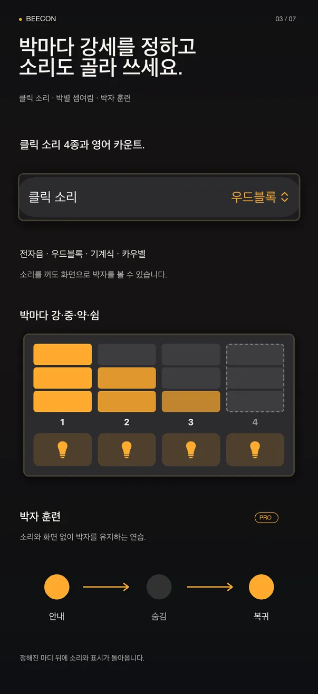
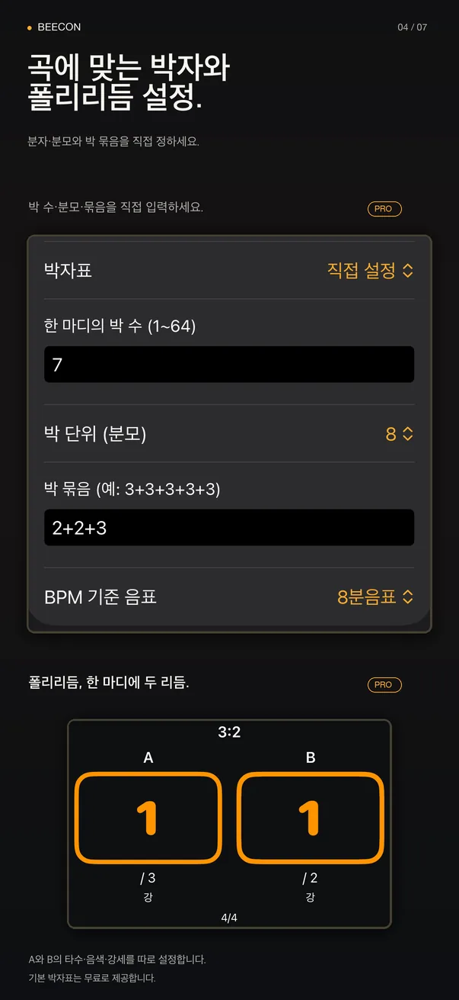
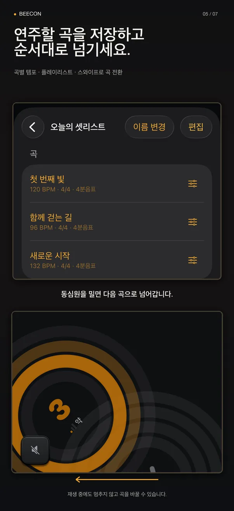
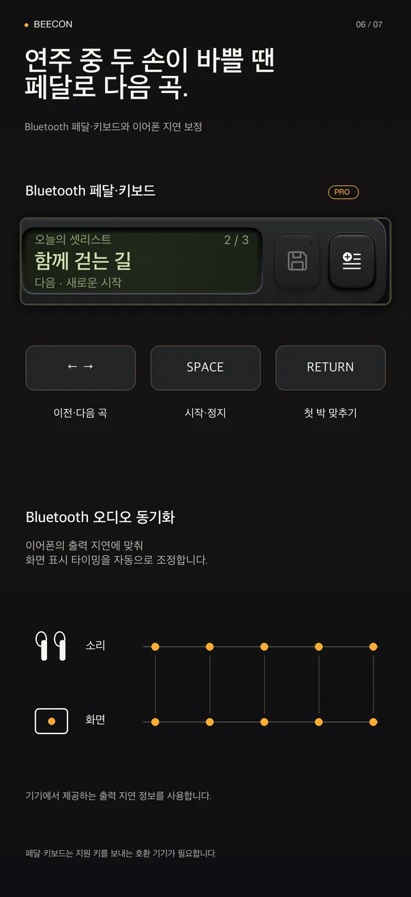
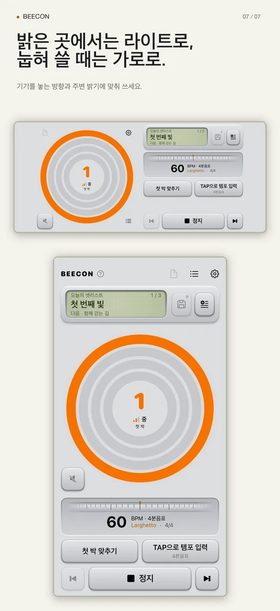

BEECON
소리가 묻혀도, 박자는 보이게.
BEECON은 박자를 크고 밝은 빛으로 보여 주는 메트로놈이에요. 곡마다 템포를 저장해 두고, 공연 순서대로 다음 곡으로 넘기세요.
iPhone·iPad: iOS 17 이상 · Android 휴대전화·태블릿: Android 12 이상 · Apple Watch·Wear OS 연동(Pro)







시끄러운 무대를 위해 만들었어요
드럼과 앰프 소리 속에서는 클릭이 쉽게 묻혀요. BEECON은 화면을 주 신호로 씁니다. 첫 박은 가장 바깥 링에서, 다음 박마다 한 칸씩 안쪽으로. 화면 전체를 깜박이거나 카메라 플래시를 켤 수도 있어요.
연주 중에 필요한 것만
동심원·진자·숫자
가장 잘 읽히는 표시를 고르세요. 박마다 강·중·약·쉼을 정할 수 있어요.
곡과 셋리스트
곡마다 템포와 박자를 저장하고 순서대로 묶으세요. 같은 곡도 목록마다 다른 템포를 쓸 수 있어요.
스와이프로 다음 곡
다음 곡 제목을 미리 보고, 박자 표시를 밀거나 버튼을 눌러 넘깁니다. 호환 Bluetooth 페달도 쓸 수 있어요(Pro).
연주하면서 조절
템포 패드를 끌거나 TAP으로 템포를 입력하고, 멈추지 않고 첫 박을 다시 맞춥니다. 한 손이면 충분해요.
필요할 때만 소리
전자음·우드블록·기계식·카우벨·영어 카운트. Bluetooth 이어폰을 쓰면 출력 지연에 맞춰 화면 박자를 조정해요.
Apple Watch · Wear OS
손목에서 박자를 확인하고 스와이프로 곡을 넘깁니다(Pro).
무료
- 동심원·진자·숫자 시각 메트로놈
- 기본 박자표 10개, 박별 강세와 쉼
- 클릭 소리와 TAP 템포
- 곡 저장과 플레이리스트 3개
- 스와이프 곡 전환, 화면·카메라 플래시
- 라이트 테마와 가로 화면
BEECON Pro
구독이 아니라 한 번 구매로 계속 써요.
- Bluetooth 페달·키보드 조작
- Apple Watch·Wear OS 연동
- 플레이리스트 개수 제한 해제
- 자유 박자와 박 묶음
- A/B 폴리리듬
- 박자 훈련
Pro 7일 체험: iPhone·iPad에서는 무료, Android에서는 소액 1회 결제예요. Android 가격은 Google Play 구매창에서 확인하세요. 자동 갱신이나 종료 후 추가 결제는 없어요.
계정도, 광고도, 추적도 없어요
곡·플레이리스트·설정은 기기에만 저장되고 개발자에게 전송되지 않아요. 네트워크 연결 없이도 동작합니다.
- 계정·가입 없음
- 광고 없음
- 분석·추적 없음
- 오프라인 동작
- 6개 언어
- 다크·라이트 테마
눈은 악보와 동료에게.
박자는 BEECON이 지킬게요.